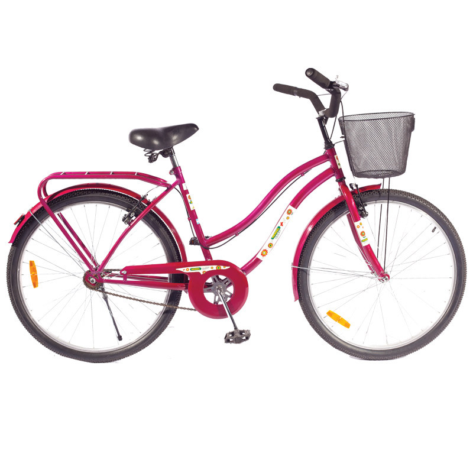

Dia mundial de la bicicleta
Banner conmemorativo:
Bicicleta:

Bicicleta:

Specialized.
Marca norteamericana considerada por muchos como la mejor del mundo (aunque sí se podría decir que es la más mediática).
Trek.
Esta mítica marca norteamericana de bicicletas lleva varios años siendo la máxima rival de Specialized, pues hacen máquinas muy avanzadas tecnológicamente y además patrocinan a muchos equipos de competición.

Merida.
Esta empresa taiwanesa es uno de los principales fabricantes de bicicletas del mundo, pues no sólo hace sus propias bicicletas sino que además es uno de los que más cuadros elabora para terceros.

Scott.
Una de las marcas más vanguardistas en todos los segmentos competitivos: montaña, carretera y triatlón. Es suiza y no sólo se dedica a la fabricación y venta de bicicletas, sino que tienen todo tipo de complementos y vestuario para los ciclistas (zapatillas, cascos, etc.) además de dedicarase a otros deportes .

Giant.
Es al igual que Merida una marca taiwanesa que a pesar de hacer productos propios, es también de los principales fabricantes de cuadros del mundo para terceros. Tienen bicicletas muy buenas y fiables y destacan tanto en carretera, como en triatlón y bicis de montaña.


 1
1 2
2 3
3 4
4 5
5 6
6 7
7 8
8